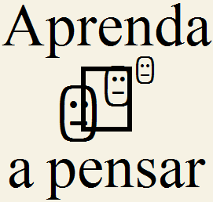

A busca pelo melhor caminho pode ser na verdade um conceito verbal, que será assimilado pelo indivíduo como uma
hipótese. Nos exercícios de interpretação de textos que exigem alto grau de complexidade, geralmente ‘um conceito’
apenas não resolve o problema, sendo necessário dois ou mais ‘conceitos’ para formar o caminho ideal ou correto para
se chegar à verdade.
Com isso, comprovamos que a repetição não é um mero ‘reforço mental’, e sim, uma maneira da mente estabelecer uma
unidade de sentido, que será recuperada na hora em que o indivíduo necessite de tal informação.
Em toda interpretação, depois de formado o conceito inicial, se faz necessária ainda outras leituras e observações
minuciosas (repetições) até se chegar a outros conceitos. Ou seja, todo texto tem em si, uma ou mais ideias, que
precisam ser esmiuçadas e testadas para que se chegue a uma conclusão verdadeira.